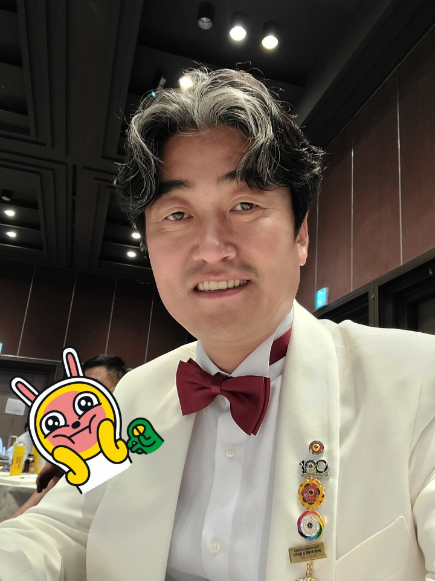
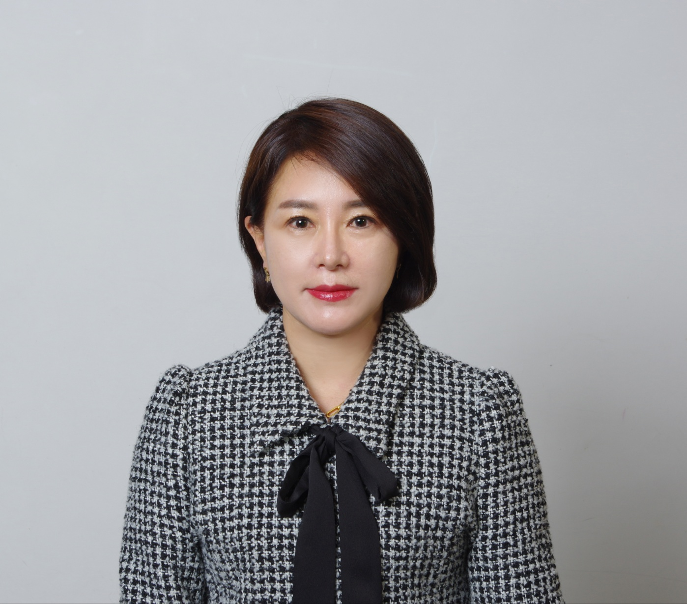
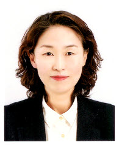

자연치유 전문 지식을 건강콘텐츠로 전환하는 크리에이터를 양성합니다. 여러분의 이야기가 치유의 콘텐츠가 됩니다.
자연치유학과 크리에이터 과정을 이끌어 갈 전문 교수진을 소개합니다.
"몸의 움직임과 자연치유가 만나는 지점에서 진정한 건강이 시작됩니다. 그 이야기를 함께 세상에 전합시다."
체육학 박사(특수체육 전공). 자연치유학과 학과장으로 과정 전반을 총괄하며, 신체 활동과 자연치유의 융합 연구에 매진하고 있습니다.
"보건과 경영의 눈으로 자연치유를 바라볼 때, 사회적 가치와 지속 가능한 미래가 열립니다."
보건학 박사·경영학 박사. 중부대학교 전 부총장 역임. 보건의료 정책과 자연치유 산업화의 교두보 역할을 해온 원로 학자입니다.

"자연치유학의 깊이 있는 지식을 누구나 이해할 수 있는 콘텐츠로 만드는 것이 우리의 사명입니다."
자연치유학 박사. 자연치유 이론과 실천을 아우르는 연구로 학문적 깊이를 더하고 있으며, 콘텐츠 기반 건강 커뮤니케이션을 연구합니다.
"좋은 영상 한 편이 사람의 마음을 움직입니다. 자연치유의 이야기를 영상으로 세상에 전하는 법을 함께 배워가겠습니다."
현직 영상감독. 엔터테인먼트학과 교수로 재직하며 기획·촬영·편집·연출의 전 과정을 지도합니다. 다양한 영상 프로젝트 현장 경험을 바탕으로 실전 중심의 교육을 이끕니다.
수강생들의 실습과 학습을 가까이서 지원하는 보조강사를 소개합니다.

"자연치유학과 패션치유를 AI 융합 시대에 부응하는 다원적 콘텐츠로 재구성하여, 자기치유의 가치를 토대로 건강한 사회 생태계 구축에 일조하고자 합니다."
자연치유학 박사. 이론과 실습의 전 영역을 체계적으로 조력하며, 수강생들의 학습 여정과 실습 성취를 세심히 동행·지원하고 있습니다.

"처음 시작하는 분들도 편하게 질문하실 수 있도록 항상 열린 마음으로 곁에 있겠습니다."
자연치유학 석사. 콘텐츠 제작 실습 보조 및 행정 지원을 담당하며, 수강생들이 과정에 빠르게 적응할 수 있도록 돕습니다.
전문 지식 + 크리에이터 기술 + 실전 멘토링의 3박자를 갖춘 국내 유일의 자연치유 콘텐츠 크리에이터 양성 과정입니다.
허브·아로마·식이요법·명상 등 자연치유 8대 분야를 현장 전문가에게 직접 배웁니다.
학문적 깊이가 콘텐츠의 신뢰와 구독자를 만듭니다.
기획부터 편집·배포까지 유튜브·쇼츠·SNS 전 과정을 직접 손으로 만들며 익힙니다.
현직 영상감독의 1:1 피드백으로 빠르게 실력을 높입니다.
알고리즘 이해부터 수익화까지, 실제 채널을 운영하며 성과를 만드는 전략을 배웁니다.
수강 중 채널을 개설하고 첫 구독자를 직접 확보합니다.
자연치유 전문성 + 크리에이터 역량을 갖춘 수료생에게 열리는 6가지 진로를 소개합니다.
건강·웰니스 전문 채널을 운영하며 광고 수익·협찬·멤버십으로 수익을 창출합니다. 자연치유 전문 지식이 경쟁력입니다.
자연치유 이론과 실습을 오프라인·온라인 강의로 전달합니다. 지자체 건강센터·복지관·기업 웰니스 프로그램 수요가 높습니다.
자연치유 관련 연구소·치유 센터·웰니스 기관에서 프로그램 기획·운영·홍보 콘텐츠 제작을 담당합니다.
건강·의료·뷰티·식품 브랜드의 콘텐츠 마케터·영상 PD로 활동합니다. 전문 지식과 영상 기술을 함께 갖춘 인재는 희소합니다.
자연치유 지식을 전자책·도서·뉴스레터로 출판합니다. 유튜브 채널과 병행하면 팬덤 기반 출판이 가능합니다.
자연치유 전문 지식과 온라인 채널을 기반으로 강의·컨설팅·제품 판매 등 다각적인 사업을 구축합니다.